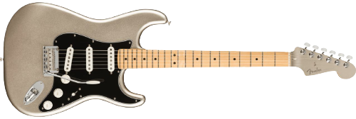
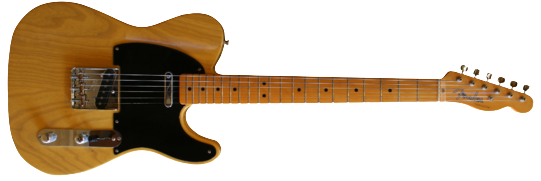
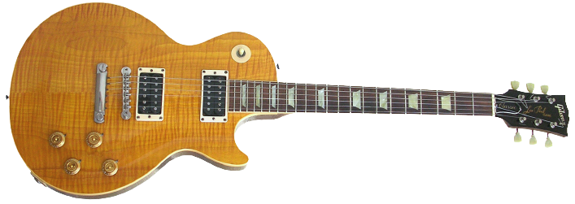

Stratocaster
Stratocaster es una guitarra eléctrica icónica con cuerpo de doble contorno y tres pastillas de bobina simple.

Telecaster
Telecaster es otra guitarra popular con cuerpo de una sola pieza, pastilla de puente de bobina única y pastilla de cuello de bobina única.

Lespaul
Les Paul es una guitarra eléctrica con cuerpo sólido, dos pastillas humbucker y un sonido grueso y cálido.